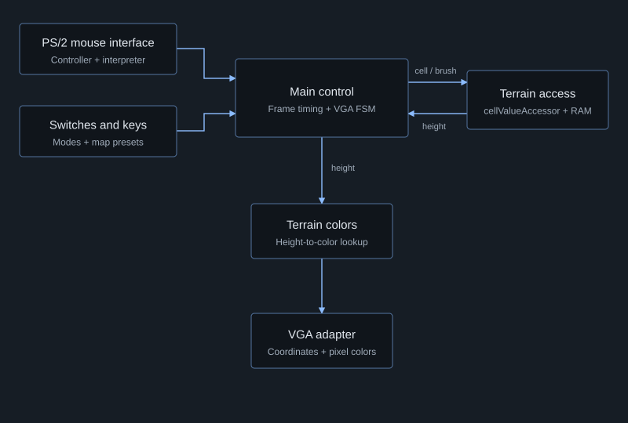
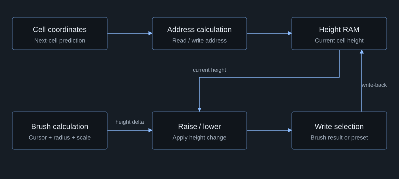

Alterraform
An interactive FPGA terrain simulator with mouse-controlled editing and height-based colors, implemented in Verilog on the DE1-SoC.
Source code cannot be shared because this project was completed as part of a course.
What it does
Alterraform is an interactive terrain simulator inspired by augmented-reality sandboxes. It stores a 200 × 200 height map and displays each cell as a 2 × 2 pixel region. Heights range from 0 to 511, with colors progressing from water and beaches to grass, mountains, and snow.
A mouse-controlled brush raises or lowers terrain into parabolic hills. Board switches change the editing mode, and four keys load a flat seabed, grassland, mountainside, or river valley.
| Mode | Interaction |
|---|---|
| Brush | Left-click raises terrain, right-click lowers it. |
| Radius / scale | Adjust brush radius from 0–63 or height scale from 0–3. Middle-click restores the default for the selected setting. |
| Flood | Switch SW2 enables flood mode. Left/right mouse buttons raise or lower the water level; red marks submerged terrain and blue marks terrain above water. The display reports the submerged percentage. |
System Architecture
The design separates mouse input, terrain storage, and display generation. The main controller coordinates them: it captures user settings, schedules terrain updates, and supplies the coordinates and colors needed by the VGA adapter.

Mouse Input and Terrain Update Logic
The PS/2 controller feeds a mouse interpreter that organizes incoming bytes into movement and button information. A byte-organizer state machine waits for each part of the packet before updating the cursor; button signals pass through debouncing logic.
The cellValueAccessor handles terrain memory. It calculates cell addresses and the brush's height change from cursor position, radius, and scale. Raise/lower logic combines that change with the current height, while a selection stage chooses between the brush result and preset-map values.

Coordinating memory and display
A 16-state, binary-encoded VGA state machine steps through the terrain and interface regions. It advances scan coordinates, controls drawing, and draws interface elements such as the radius slider and scale number.
The frame controller captures inputs into pipeline registers and schedules brush writes and display updates. I refactored memory access and VGA logic to operate concurrently, coordinating shared memory access so rendering and display updates could proceed in parallel.
Additional Details
This was an ECE241 course team project implemented in Verilog on the Altera DE1-SoC, using Quartus Prime and ModelSim.
The central engineering challenge was coordinating input, state, memory timing, and pixel output. The design made those responsibilities explicit through separate modules and state machines.